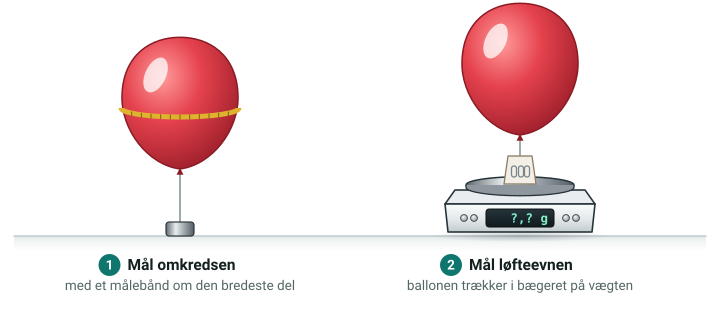

Modul 4 · Fysik
Hvor meget kan en brintballon løfte?
Fra modul 3 ved I, at opdriften på en ballon er lige så stor som tyngden af den luft, ballonen skubber væk. I dag regner I i gram i stedet for i newton: En ballon kan bære lige så meget, som den luft, den skubber væk, vejer, minus det, gassen i ballonen selv vejer. Det kaldes ballonens løfteevne. Læreren har fyldt almindelige balloner med hydrogen, den letteste gas.
1Gæt først
Hvor mange gram tror I, en ballon fyldt med hydrogen kan løfte? Skriv jeres gæt og en begrundelse, før I går videre.
2Densiteten af en gas
Densiteten ρ (udtales "rho") fortæller, hvor meget en bestemt mængde af et stof vejer: ρ = m / V. For en gas kan densiteten findes ud fra idealgasligningen fra modul 2.
Skriv idealgasligningen.
Stofmængden kan skrives n = m / M, hvor m er massen og M molarmassen. Sæt det ind i idealgasligningen i stedet for n.
Isolér m / V på den ene side af lighedstegnet. Så har I en formel for densiteten ρ.
Hjælp
Gang med M på begge sider, og del med R, med T og med V.
Beregn densiteten af luft og af hydrogen ved 20 °C og 1,013 bar. M(luft) = 28,96 g/mol, M(H₂) = 2,02 g/mol og R = 0,0831 L · bar/(mol · K).
3Formlen for løfteevnen
Ballonen skubber luften med volumenet V væk. Hydrogenet i ballonen har det samme volumen. Løfteevnen er massen af den luft, ballonen skubber væk, minus massen af hydrogenet.
Skriv de to masser ved hjælp af V og densiteterne.
Skriv formlen for løfteevnen.
4Mål ballonens volumen

Bind ballonen til et lod, så den ikke flyver væk, og mål omkredsen om den bredeste del. Regn, som om ballonen er en kugle.
| Omkreds O i cm | Radius r i cm | Volumen V i L |
|---|---|---|
Beregn radius og volumen. For en kugle er O = 2 · π · r og V = 4/3 · π · r3, og 1 L = 1000 cm3.
Beregn ballonens løfteevne med formlen fra opgave 3.
5Mål løfteevnen
Kom så mange papirclips i et papirbæger, at ballonen ikke kan løfte det. Vej bægeret. Bind ballonen til bægeret, og stil bægeret på vægten. Vej til sidst en tom ballon af samme slags med snor.
| Bægeret alene i g | Vægten viser med ballonen i g | Tom ballon og snor i g |
|---|---|---|
Ballonen trækker bægeret opad, så vægten viser mindre. Forskellen plus massen af gummiet og snoren er ballonens løfteevne. Beregn den målte løfteevne.
Sammenlign med jeres beregning og jeres gæt. Hvorfor passer de ikke helt?
6Fra brint til varm luft
I konkurrencen bruger I varm luft i stedet for hydrogen. Luften i ballonen er den samme som udenfor, men den er varmere, så den fylder mere og vejer mindre pr. liter. Når trykket er det samme, er ρ(varm luft) = ρydre · Tydre / Tindre, hvor ρydre er densiteten af luften udenfor.
Sæt det ind i formlen fra opgave 3 i stedet for ρ(H₂), og vis, at løfteevnen for varm luft er V · ρydre · (1 − Tydre / Tindre).
Hvor varm skulle luften i jeres ballon være for at løfte lige så meget som hydrogenet? Hvad fortæller det om størrelsen af en varmluftballon?